RESTORAN VINARIJA JOSIĆ
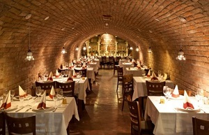
Najpoznatija vina:
- Graševina Terra Panonium
- Pinot Sivi
- Josić Rose
VINARIJA BRZICA
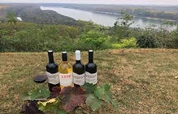
Najpoznatija vina:
- Brzica Chardonnay
- Brzica Merlot
- Brzica Cabernet Sauvignon
FERAVINO, FERIČANCI
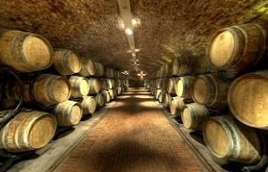
Najpoznatija vina:
- Dika Zweigelt
- Miraz Chardonnay
- Miraz Cuvee
VINARIJA BELJE
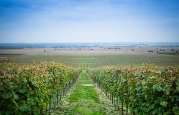
Najpoznatija vina:
- Vrhunska Frankovka
- Vrhunski Merlot
- Vrhunski Chardonnay
ERDUTSKI VINOGRADI
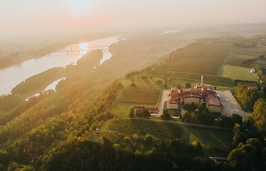
Najpoznatija vina:
- Premium Graševina
- Rajnski Rizling
- Traminac
VINARIJA DARUVAR
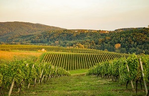
Najpoznatija vina:
- Sauvignon Vezak
ILOČKI PODRUMI
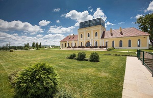
Najpoznatija vina:
- Vrhunski traminac
- Graševina Principovac
- Traminac Principovac
- Traminac, izborna berba prosušenih bobica
VINARIJA DRAGUN
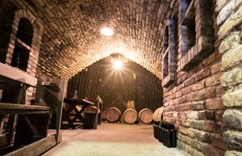
Najpoznatija vina:
- Graševina
- Merlot
IVAN ENJINGI, KUTJEVO
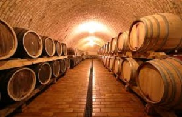
Najpoznatija vina:
- Bijelo Venje
- Graševina, kasna berba
- Zweigelt
GALIĆ, KUTJEVO
Najpoznatija vina:
- Rizling Macerator
- Sauvignon
- Crni pinot
KRAUTHAKER, KUTJEVO
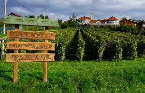
Najpoznatija vina:
- Graševina Mitrovac
- Graševina Kuvlakhe
- Manzoni Kuvlakhe
- Mercs (merlot i cabernet sauvignon)
KUTJEVO, KUTJEVO
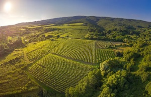
Najpoznatija vina:
- Graševina , ledena berba
- Traminac, ledena berba
MIHALJ, KUTJEVO
Najpoznatija vina:
- Suha graševina
- Polusuha graševina
- Merlot
SONTACCHI, KUTJEVO
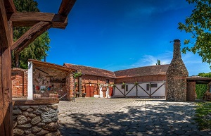
Najpoznatija vina:
- Graševina